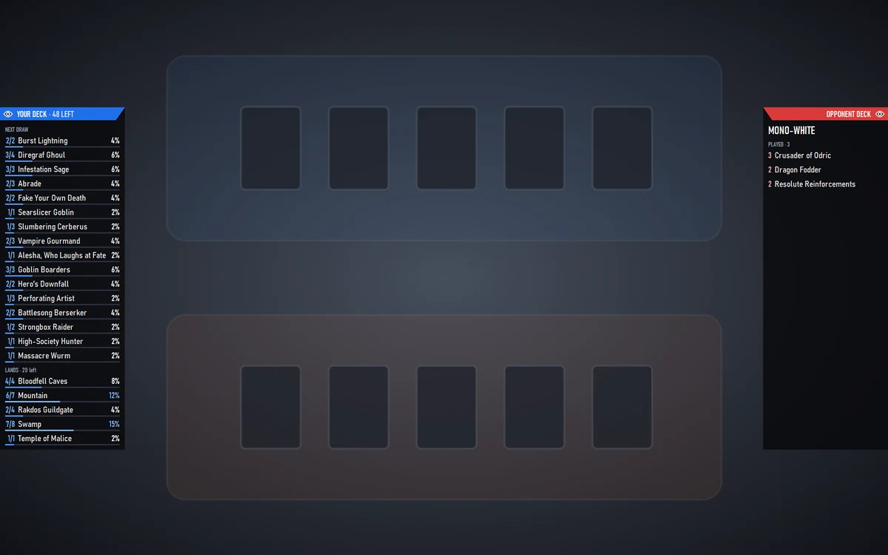

Guide · Deck HUD
Deck HUD
While you play, a slim list on each edge of MTG Arena: on the left your own deck card by card, on the right what the opponent's deck most likely is. It reads the deck, never the player, and it lives only on top of Arena.

Your deck, on the left edge
- Cards in library at the top: how many cards are left to draw.
- Every card of your deck with the copies still in the library out of the copies in the deck (3/4), and the chance of drawing it with your next draw, with a thin bar under the card that fills up as the chance grows. The numbers go down as cards leave the library; a card you have run out of stays in the list, greyed.
- Lands in their own section at the bottom, with how many are left.
The opponent's deck, on the right edge
- The archetype it most likely is, with how sure the app is, worked out from the spells it has shown so far against the meta lists. A deck outside the meta is named by its colours (Azorius, Mono-White), never «Other».
- Played: the spells it has cast, newest first, lands left out.
- Likely in its 60: the cards that archetype usually plays, with how likely each one is.
- With N open: the instants its untapped lands can pay for right now.
- In limited: its colour pair with the public 17Lands numbers for that pair, credited on screen.
The eye, the header and the READY badge
- The header is a solid bar in team colours, blue for you and red for the opponent; your bar also tells how many cards are left in your library.
- The eye sits in each list's header bar, at the edge of the screen. Click it and the list folds to its header; click again and it comes back. The choice is remembered.
- Clicks pass through the lists to Arena: only the two eyes take a click, and they never take the focus away from the game.
- Between games a small blue bar with the app logo, DECK HUD and a green READY, sits on the left edge at the height of the list headers: it tells you the HUD is on and waiting for the next game.
Turning it on and off
In the app's tab bar the DECK HUD pill says ON in blue when the HUD is on, OFF in grey when it is off, and shows a green dot and LIVE during a game. Click it for two switches, Your deck and Opponent's deck, both on by default. The app must be open: it starts the HUD and restarts it if it ever stops.
In sanctioned competitive events (Arena Championship and qualifiers), where outside assistance is not allowed; against Sparky, who has no deck to read; and on Mac, where the overlay on top of Arena does not exist yet. If Arena runs in exclusive full screen the lists may not show: windowed or borderless works.
The deck, never the player
A poker HUD tracks players; this one tracks decks only: no opponent name or id is shown, saved or shared, and nothing about the opponent is written to disk. What it knows comes from your own Arena log, read on your PC.